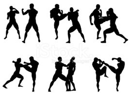

Hakkımda
Hedefleri ve hayalleri doğrultusunda hareket eden Siber Güvenlik bölümüne yoğunlaşmış Sakarya Üniversitesi Bilgisayar Mühendisliği 4. sınıf öğrencisiyim.
3 mayıs 2000 tarihinde Ispartada doğdum. Üniversite hayatımın ilk senesini Süleyman Demirel Üniversitesinde yine aynı bölümde geçirdim. 2019 senesinde Sakarya Üniversitesine merkezi puanım ile yatay geçiş yaptım. 1 abim 1 kardeşim olmak üzere 3 erkek kardeşiz. Liseyi ve ortaokulu abimle aynı okullarda okudum.

Hayatımın birçok bölümünde farklı hobilerle ilgilenmiş birisi olarak, küçük yaşlarımdaki ilk hobilerimden birisi olan satranç geçmişimi sizinle paylaşmak isterim. 4 yaşından itibaren babam sayesinde taşları oyunun gramerini öğrenmeye başlamıştım. Ortaokul ve lise dönemlerimde çokça oynayıp dereceler kazandığım bu spor dalında lisemde bir dönem takım kaptanlığı yapmıştım.
Lise hayatımda satrancın dışında kickboks sporuyla da profesyonel olarak ilgilendim. Birkaç Turnuva geçmişim mevcut.
Bunların dışında film, dizi ve anime izlemeyi; kitap okumayı ve oyun oynamayı severim.
https://www.linkedin.com/in/yasinaltunbasak/